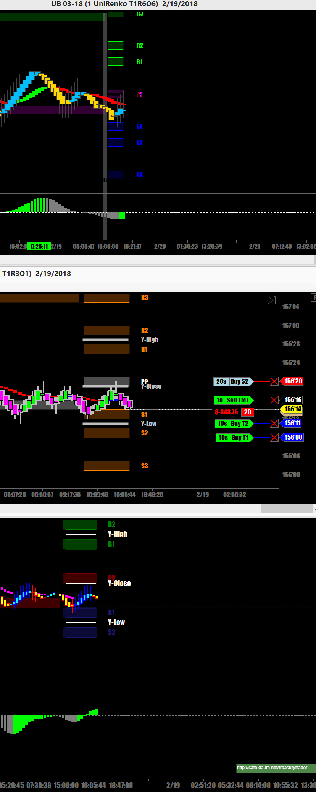
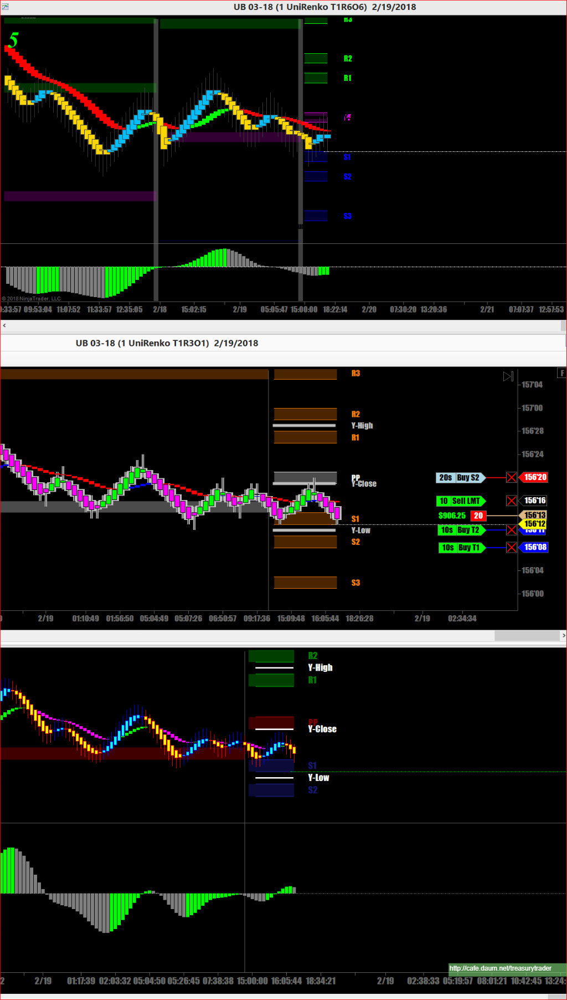
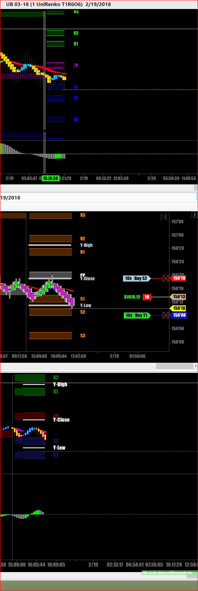
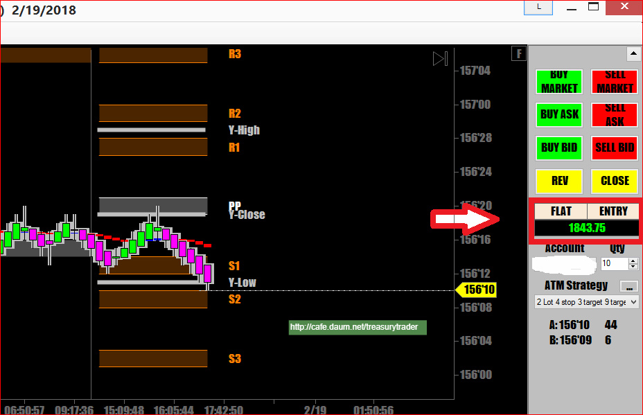

President's day 공휴일이라 휴장했다가 방금전 오후 3시에 장외마켓이 개장
어디를 보나 당장은 하락세
곧바로 short side로 진입
10계약씩 1틱 간격으로 분할주문 넣었는데 20계약 체결 됨



기계적매매의 기본은
하방으로 지를것인지 상향으로 갈것인지를 결정한 후 (언제나 추세방향대로만 매매)
그쪽 방향으로 봉 색깔 바뀌면 무조건 진입(특히 중요 지지(저항)닿고 색깔 바뀌면 최고)
일단 3틱 정도에서 절반 수익 실현해놓고 나머지는 따라가는 기법
이런식으로 매매하면 스트레스도 적고 손절은 짧고 수익은 크게 날 수 있음
BUT --매매선(기준선)이 옆으로 드러눕는 ,각도가 없는 횡보중인 상태에서는 매매금지

저는 오전부터 방향이 안맞아서 ! 오일 매도 포지션! 너무 올라기지에 손절하고! 틱 티기로 해서 본전 찿자했는데! 제생각대로 푹 빠지고 ! 일단 챙기고 있는데 이건 똑 들어오리고! 하여간 오늘 어제 손실다 만회하고 3000불 벌었읍니다! 저는 차트 등 뉴스 안보고 세력이 들어오고 나온것만 봅니다! 방장님 감사합니다
답글 | 신고
DarkTemplar 18.02.21. 04:07
축하드립니다. ㅎㅎ
역시 고수시라 한방이 있으시군요.
크루드오일은 제대로 방향을 잡으면 길게 갈때가 많아서 대박이 가능하지요
수고 많으셨습니다.
저는 오늘은 UB로 초단타 스캘핑하느라 엄청 바쁘네요..
나중에 결과보고 드리겠습니다
답글 | 신고
서초동 18.02.21. 16:38
요새.!국채는 도저히 감이 안잡히고 메이저들 마음인지 다우지수에 많이 쫗아가느것같고! 안전자산 선호도 이해가지만! 금리가 3% 가까이 오면 분명히 떨어져야되는데! 떨어 졌다가도 처울리고!
답글 | 신고
서초동 18.02.21. 16:42
어제 10년물 국채 찬스다 싶어서 120.05에 매수 풀로 걸어났는데 체결이 안되고 왔가 갔다 하다가 위로 가더라구요!
답글 | 신고
┗ DarkTemplar 18.02.21. 20:54
언제부턴가 경제공식이 하나도 안맞기 시작하더니만 국채고 골드고 유가에 달러까지 자기들 멋대로 움직이는것 같습니다. 그래서 저는 단타만 하고 있지요. 전혀 예상이 안됩니다..